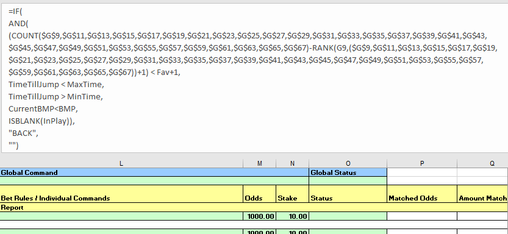
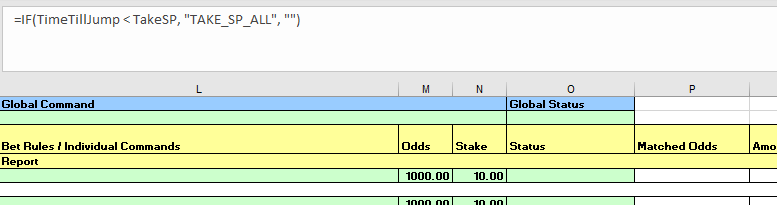
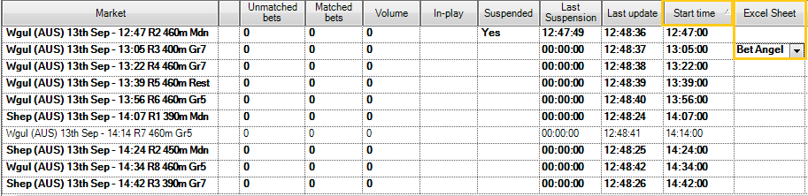

Bet Angel - market favourite automation¶
Automating a market favourite strategy using Bet Angel Pro¶
Here we explore how to implement an automated strategy to place Betfair Starting Price (BSP) bets on the top two runners in the market. This lets you choose your selections based on market sentiment close to the jump, and not worry about current market price by using BSP to place your bets. You could equally use effectively the same approach if you wanted to lay the favourite(s) instead of back them.
Building on our previous articles, we're using the spreadsheet functionality available in Bet Angel Pro to implement this strategy. If you haven't already I'd recommend going back and having a read of this article, as the concepts here do build on what we covered previously. As I've said before, there are so many different ways to use this part of Bet Angel and I'm very open to any thoughts about more effective ways of implementing this sort of strategy. You're welcome to reach out to me on bdp@betfair.com.au with your feedback and opinions.
The plan¶
Given that we're simply choosing our selections based on the market we don't need any ratings for this strategy. The plan is to look at the market a couple of minutes before the scheduled jump and place BSP bets based on its formation.
My approach here, and how I've set up the accompanying spreadsheet, backs the top two runners in the market two minutes out from the scheduled start time using the Betfair Starting Price.
Resources
- Rules: here's the spreadsheet I set up with my macros and rules included, but you'll obviously need to tweak it to suit your strategy and approach
- Tool: Bet Angel Pro
Set up¶
Make sure you've downloaded and installed Bet Angel Pro, and signed in.
Once you open the program up click on the 'G' Guardian icon and open the Guardian functionality up.

Writing your rules¶
As with any automated strategy, one of the most important steps is deciding what logical approach you want to take, and writing rules that suit.
I'm using a customised version of the default Bet Angel template Excel sheet to implement my strategy, so it can make betting decisions based on the favourites being shown in the market. Excel is an excellent tool, but it can take an investment of time to be able to use it effectively.
This is how I used Excel to implement my set of rules.
Trigger to place bet¶
In short, I want to back runners when:
- the selection's available to back price (the blue box on the Exchange) is either the lowest or second lowest in the market - the top two market favourites
- the scheduled event start time is less than 2 minutes away
- the event isn't in play
This is my trigger on Excel formula:
=IF(
AND(
(COUNT($G$9,$G$11,$G$13,$G$15,$G$17,$G$19,$G$21,$G$23,$G$25,$G$27,$G$29,$G$31,$G$33,$G$35,$G$37,$G$39,$G$41,$G$43,$G$45,$G$47,$G$49,$G$51,$G$53,$G$55,$G$57,$G$59,$G$61,$G$63,$G$65,$G$67)-RANK(G9,($G$9,$G$11,$G$13,$G$15,$G$17,$G$19,$G$21,$G$23,$G$25,$G$27,$G$29,$G$31,$G$33,$G$35,$G$37,$G$39,$G$41,$G$43,$G$45,$G$47,$G$49,$G$51,$G$53,$G$55,$G$57,$G$59,$G$61,$G$63,$G$65,$G$67))+1) < 3,
SETTINGS!$E$4 < 120, SETTINGS!$E$4 > 60,
ISBLANK($G$1)),
"BACK",
""
)
=IF(AND((COUNT($G$9,$G$11,$G$13,$G$15,$G$17,$G$19,$G$21,$G$23,$G$25,$G$27,$G$29,$G$31,$G$33,$G$35,$G$37,$G$39,$G$41,$G$43,$G$45,$G$47,$G$49,$G$51,$G$53,$G$55,$G$57,$G$59,$G$61,$G$63,$G$65,$G$67)-RANK(G9,($G$9,$G$11,$G$13,$G$15,$G$17,$G$19,$G$21,$G$23,$G$25,$G$27,$G$29,$G$31,$G$33,$G$35,$G$37,$G$39,$G$41,$G$43,$G$45,$G$47,$G$49,$G$51,$G$53,$G$55,$G$57,$G$59,$G$61,$G$63,$G$65,$G$67))+1) < 3, SETTINGS!$E$4 < 120, SETTINGS!$E$4 > 60, ISBLANK($G$1)),"BACK","")
Stepping through each step:
- Finding the top two selections in the market: check each runner to see if they're one of the two market favourites - I'm doing this by going through the best available to back (blue) price for each runner, ranking them in order (which sorts them from highest to lowest - which is the opposite of what we want) then subtracting that rank number from the total number of selections available to inverse the order. Finally I plus one to the resulting rank - if I didn't do this then you'd have a rank order that started at 0, not 1, and I thought that would just confuse matters!
Once it's established what each selection's rank is, we then check if that rank is less than three, and if it is we know that the runner in question is one of the top two in the market, based on the current available to back prices.
=IF(
AND(
(COUNT($G$9,$G$11,$G$13,$G$15,$G$17,$G$19,$G$21,$G$23,$G$25,$G$27,$G$29,$G$31,$G$33,$G$35,$G$37,$G$39,$G$41,$G$43,$G$45,$G$47,$G$49,$G$51,$G$53,$G$55,$G$57,$G$59,$G$61,$G$63,$G$65,$G$67)-RANK(G9,($G$9,$G$11,$G$13,$G$15,$G$17,$G$19,$G$21,$G$23,$G$25,$G$27,$G$29,$G$31,$G$33,$G$35,$G$37,$G$39,$G$41,$G$43,$G$45,$G$47,$G$49,$G$51,$G$53,$G$55,$G$57,$G$59,$G$61,$G$63,$G$65,$G$67))+1) < 3,
SETTINGS!$E$4 < 120, SETTINGS!$E$4 > 60,
ISBLANK($G$1)),
"BACK",
""
)
- Time < 2 mins and > 1 min: check whether the seconds left on the countdown are smaller than 120 (2 minutes) and greater than 60 (1 minute), as we need to both place the bet and then convert it to a BSP bet before the off (more on this later). This one's a bit complicated, as the time is actually returned as a percentage of a 24 hour day, which you need to convert into positive or negative seconds. You can read about the formula here or just keep it simple by referencing the value in cell E4 of the SETTINGS sheet, where I've already done the calculations for you.
=IF(
AND(
(COUNT($G$9,$G$11,$G$13,$G$15,$G$17,$G$19,$G$21,$G$23,$G$25,$G$27,$G$29,$G$31,$G$33,$G$35,$G$37,$G$39,$G$41,$G$43,$G$45,$G$47,$G$49,$G$51,$G$53,$G$55,$G$57,$G$59,$G$61,$G$63,$G$65,$G$67)-RANK(G9,($G$9,$G$11,$G$13,$G$15,$G$17,$G$19,$G$21,$G$23,$G$25,$G$27,$G$29,$G$31,$G$33,$G$35,$G$37,$G$39,$G$41,$G$43,$G$45,$G$47,$G$49,$G$51,$G$53,$G$55,$G$57,$G$59,$G$61,$G$63,$G$65,$G$67))+1) < 3,
SETTINGS!$E$4 < 120, SETTINGS!$E$4 > 60,
ISBLANK($G$1)),
"BACK",
""
)
- Not in play: checking whether the event has gone in play, as this is purely a pre-play strategy, though you could certainly take a similar approach to in-play markets. If this cell is blank it means it's not displaying the 'in-play' flag, so it's safe to place bets.
=IF(
AND(
(COUNT($G$9,$G$11,$G$13,$G$15,$G$17,$G$19,$G$21,$G$23,$G$25,$G$27,$G$29,$G$31,$G$33,$G$35,$G$37,$G$39,$G$41,$G$43,$G$45,$G$47,$G$49,$G$51,$G$53,$G$55,$G$57,$G$59,$G$61,$G$63,$G$65,$G$67)-RANK(G9,($G$9,$G$11,$G$13,$G$15,$G$17,$G$19,$G$21,$G$23,$G$25,$G$27,$G$29,$G$31,$G$33,$G$35,$G$37,$G$39,$G$41,$G$43,$G$45,$G$47,$G$49,$G$51,$G$53,$G$55,$G$57,$G$59,$G$61,$G$63,$G$65,$G$67))+1) < 3,
SETTINGS!$E$4 < 120, SETTINGS!$E$4 > 60,
ISBLANK($G$1)),
"BACK",""
)
- Result: if the statement above is true, the formula returns "BACK", at which point the bet will trigger, otherwise the cell will remain blank and no bet will be placed.
=IF(
AND(
(COUNT($G$9,$G$11,$G$13,$G$15,$G$17,$G$19,$G$21,$G$23,$G$25,$G$27,$G$29,$G$31,$G$33,$G$35,$G$37,$G$39,$G$41,$G$43,$G$45,$G$47,$G$49,$G$51,$G$53,$G$55,$G$57,$G$59,$G$61,$G$63,$G$65,$G$67)-RANK(G9,($G$9,$G$11,$G$13,$G$15,$G$17,$G$19,$G$21,$G$23,$G$25,$G$27,$G$29,$G$31,$G$33,$G$35,$G$37,$G$39,$G$41,$G$43,$G$45,$G$47,$G$49,$G$51,$G$53,$G$55,$G$57,$G$59,$G$61,$G$63,$G$65,$G$67))+1) < 3,
SETTINGS!$E$4 < 120, SETTINGS!$E$4 > 60,
ISBLANK($G$1)),
"BACK",
""
)
- Convert bets to Betfair Starting Price: Bet Angel Pro doesn't offer the option to place straight BSP bets, so I've got around that here by placing the bets initally at odds of 1000 (which won't get matched for short favourites), and then a minute off from the scheduled start using what Bet Angel calls a 'Global Command' to convert all unmatched bets to BSP. This formula goes in cell L6, and once it's triggered the bets will automatically convert.
=IF(SETTINGS!$E$4 < 60, "TAKE_SP_ALL", "")
Excel functions
- IF statement: IF(if this is true, do this, else do this)
- AND statement: AND(this is true, and so is this, and so is this) - returns true or false
- COUNT function: returns number of cells in the range you pass in tha contain a number
- RANK function: returns the rank of a number in a list of numbers, with the smallest number returning the highest rank.
- Absolute references: if you're copy/pasting formulas it's important that you make links absolute when you don't want the cell being referenced to change relative to the new cell the formula is being pasted into. You do this by putting a $ in front of the parts of the reference you don't want to 'move'.
Preparing the spreadsheet¶
You need to copy/paste these three formulas into the relevant cell on each green row - I copied mine into all of the coloured cells in the sheet, just in case the fields are bigger in future events. Excel is clever enough to automatically update the relative links in the formulas, so you should be able to copy/paste the same formula into each cell as long as you've got your relative and absolute references straight.
- Trigger bet rule: this is the bet trigger Excel formula we created earlier, and it needs to go in column L (L9 for the first runner).
=IF(
AND(
(COUNT($G$9,$G$11,$G$13,$G$15,$G$17,$G$19,$G$21,$G$23,$G$25,$G$27,$G$29,$G$31,$G$33,$G$35,$G$37,$G$39,$G$41,$G$43,$G$45,$G$47,$G$49,$G$51,$G$53,$G$55,$G$57,$G$59,$G$61,$G$63,$G$65,$G$67)-RANK(G9,($G$9,$G$11,$G$13,$G$15,$G$17,$G$19,$G$21,$G$23,$G$25,$G$27,$G$29,$G$31,$G$33,$G$35,$G$37,$G$39,$G$41,$G$43,$G$45,$G$47,$G$49,$G$51,$G$53,$G$55,$G$57,$G$59,$G$61,$G$63,$G$65,$G$67))+1) < 3,
SETTINGS!$E$4 < 120, SETTINGS!$E$4 > 60,
ISBLANK($G$1)),
"BACK",
""
)
=IF(AND((COUNT($G$9,$G$11,$G$13,$G$15,$G$17,$G$19,$G$21,$G$23,$G$25,$G$27,$G$29,$G$31,$G$33,$G$35,$G$37,$G$39,$G$41,$G$43,$G$45,$G$47,$G$49,$G$51,$G$53,$G$55,$G$57,$G$59,$G$61,$G$63,$G$65,$G$67)-RANK(G9,($G$9,$G$11,$G$13,$G$15,$G$17,$G$19,$G$21,$G$23,$G$25,$G$27,$G$29,$G$31,$G$33,$G$35,$G$37,$G$39,$G$41,$G$43,$G$45,$G$47,$G$49,$G$51,$G$53,$G$55,$G$57,$G$59,$G$61,$G$63,$G$65,$G$67))+1) < 3, SETTINGS!$E$4 < 120, SETTINGS!$E$4 > 60, ISBLANK($G$1)),"BACK","")

- Odds: as I said we're putting the bet up initially at odds of 1000, so this is a simple one.
1000

- Stake: it's completely up to you what staking approach you want to take. I'm keeping it simple and using flat staking here, so will just place $10 on each runner. This goes in column N (N9 for the first runner). We've got some good resources on the Hub that look at different staking approaches - these might be useful in helping you decide which strategy you want to use.
10

- Global Command: this is what triggers the open bets to convert to BSP, and only goes in one cell, L6. As soon as the countdown timer reaches less than 60 seconds this will fire.
''' =IF(SETTINGS!E4 < 60, "TAKE_SP_ALL", "") '''

You know the drill¶
The process is effectively the same from here on as for our previously automated strategy, but I've included it here just in case you want a refresher or are new to Bet Angel Pro.
Selecting markets¶
I used the markets menu in the Guardian tool to navigate to the tracks I had ratings for, then multi-selected all the win markets by holding down the control key and clicking on the different markets.
If you wanted to include all horse or greyhound races for a day you could use the 'quick picks' tab to do this more efficiently.
Once you've chosen the races you're interested in click the 'add' button and you'll see them appear in the main body of the screen.
Make sure you sort the races by start time, so Bet Angel will automatically move through them in the right order and allocate the next race to the spreadsheet once the previous one ends.
You do this by clicking on the 'start time' column heading until the races are in time order (when the arrow is pointing up).

Linking the spreadsheet¶
Open the 'Excel' tab in Guardian, then use the browse functionality to choose the spreadsheet you've been working on. From there, click on 'open workbook', then make sure you have 'connect', 'auto-bind Bet Angel sheets and 'auto-clear Bet Angel bindings' all selected. You also need to make sure that the first race has the 'Bet Angel' tab selected in the 'Excel sheet' column - from there it will then automatically update this for each race as one finishes and the next one begins.

And you're set!¶
Once you've set your spreadsheet set up and you're comfortable using Bet Angel Pro it should only take a number of seconds to load your markets and set your strategy running for the day. Just make sure you have all of the app settings correctly selected before you leave the bot to run, as some of them reset by default when you turn the program off.
Note: I appreciate it's obvious, but you will need to leave your computer up and running for the duration of the chosen markets, as the program needs the computer to be 'awake' to be able to run.
Bet Angel features¶
Here are some Bet Angel features that you'll need to consider.
Multiple bets/clearing status cells¶
The Bet Angel spreadsheet won't let a bet go on if there is a value in column 0 for the runner, the 'status' column, to avoid accidentally placing multiple bets unintentionally. As soon as a bet triggers, Bet Angel automatically changes this cell to 'PLACING', then to 'PLACED' when the bet is confirmed as having been received by Betfair. In this strategy I only want to place one bet per runner, but if you wanted to place multiple bets on a runner you'd need to have a play wtih the macros to clear the 'status' cells more regularly, and instead reference the number of bets placed/matched in columns T:AE. Careful here though, as the values in these columns sometimes take a little time to update, and I've had more bets go on than I intended when using these cells as my check, as bet trigger reevaluated before columns T:AE had updated.
As we want to use the same sheet for multiple races, and the 'status' cells don't clear automatically, I've created a macro in the Excel sheet that auto-clears the status and global status cells whenever a new race loads. It also clears the cells if they say 'FAILED', as I found that if there were internet network issues or similar it would fail once then not try to place the bet again. This was based on some logic I found in a forum discussion on Bet Angel. If you're feeling adventurous you can have a play with the macros and edit them to suit your specific needs.
Turning off bet confirmation¶
Unless you want to manually confirm each individual bet you're placing (which you definitely might want to do until you feel comfortable that the program and strategy are behaving as you expect) you'll need to go into the 'Settings' tab on the main Bet Angel Pro program, click 'Edit settings', go to the 'Behaviour' tab, and remove the tick at the top next to 'Confirm Bets?' - you can then save these settings.
Editing the spreadsheet¶
The spreadsheet really doesn't like it when you try and edit it 'live', so make sure you untick 'connect' on the Excel tab in Guardian before you make any changes, save the sheet, then tick 'connect' again once you've finished your edits.
Areas for improvement¶
There are parts of this approach that I'm still trying to get to work to my liking, and I'll update this article as I find better solutions. If you have any suggestions for improvements please reach out to bdp@betfair.com.au - I'd love to hear your thoughts.
For example, the spreadsheet only binds with one market at a time, so if one market gets delayed and runs overtime the program won't be able to move on to the next market - I missed some races because of this.
Also, if the market changes significantly in those last few minutes and a third selection shortens in past the two we've placed bets on you could end up with bets on more than the intended two runner. This is something you could check for in your bet rule if you wanted to ensure you were only backing a set number of runners.
What next?¶
We're working through some of the popular automation tools and creating articles like this one to help you learn how to use them to implement different styles of strategies. If you have any thoughts or feedback on this article or other programs you'd like to see us explore please reach out to bdp@betfair.com.au - this article has already been updated with extra learnings including variable percentages and new macros.
Disclaimer¶
Note that whilst automated strategies are fun and rewarding to create, we can't promise that your betting strategy will be profitable. If you're implementing your own strategies please gamble responsibly and note that you are responsible for any winnings/losses incurred.